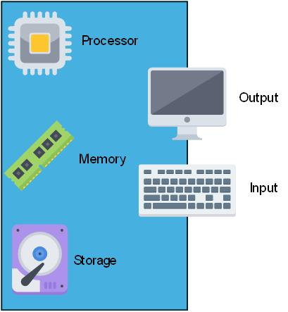
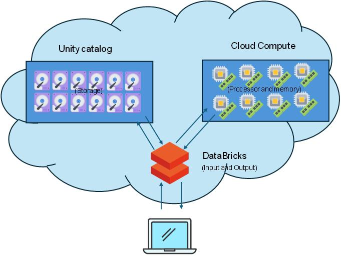
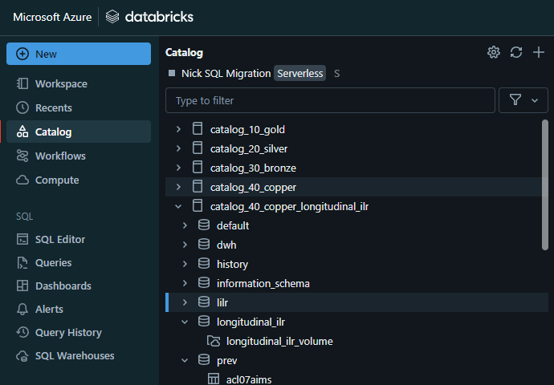
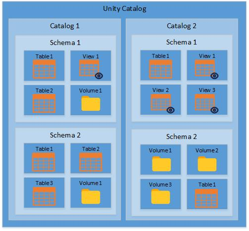
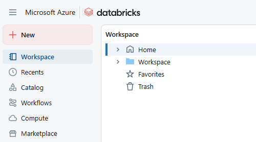
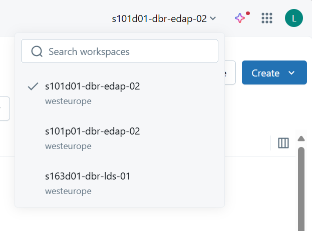
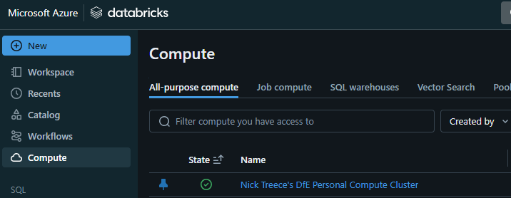

Databricks fundamentals
Please be aware that the Databricks platform is regularly updated and may look different from the guidance included on this site. If you notice any discrepancies between the content on this site and the Databricks platform, please let us know by contacting statistics.development@education.gov.uk.
What is Databricks?
Databricks is the software that underpins ADA’s analytical workbench, allowing analysts to explore and analayse data via a browser, taking advantage of cloud computing. Unlike RStudio or SQL Server Management Studio (SSMS), you don’t have to download any software to be able to use it. Databricks offers a few different ways to work with data, including scripts and notebooks. It currently supports the languages R, SQL, Python and Scala, and integrates well with Git based version control systems such as GitHub or Azure DevOps. You can also access data held within the Databricks platform using other software, such as RStudio.
Behind the scenes it is a distributed cloud computing platform which utilizes the Apache Spark engine to split up heavy data processing into smaller chunks. It then distributes them to different ‘computers’ within the cloud to perform the processing of each chunk in parallel. Once each ‘computer’ is finished processing the results are recombined and passed back to the user or stored.
Due to the parallel processing capabilities this improves the performance of the data processing and allows for the manipulation of very large data sets in a relatively short amount of time.
In addition, it also provides new tools within the platform to construct and automate complex data transformations and processing.
If you are looking to connect to Databricks with RStudio, take a look at the guide to Databricks RStudio personal cluster page.
Key differences
Underpinning the technology are some key differences in how computers we’re familiar with, and Databricks (and distributed computing in general) are structured.
Traditional computing
Currently, we are used to using a PC or laptop to do our data processing. A traditional computer has all of the components it needs to function:
- A processor and memory to do calculations
- A hard drive to store data permanently on
- A keyboard and mouse to capture user input
- A screen to provide outputs to the user

Any traditional computer is limited by its hardware meaning there is an upper limit on the size and complexity of data it can process.
In order to increase the amount of data a computer can process, you would have to switch out the physical hardware of the machine for something more powerful.
On Databricks
In Databricks you can scale the components of your machine up (CPU cores, RAM) without having to build a physical machine to house them, essentially temporarily ‘borrowing’ processor power, memory and storage from a super computer.
This means you can perform very heavy analyses that your laptop wouldn’t be able to cope with. The Databricks platform provides a way for you to interface with the cloud computer in place of the keyboard/mouse and screen, taking your inputs and providing the resulting outputs back to you.
The storage and computation are separated into different components rather than being within the same ‘machine’. Processing (processor and memory) is handled by a ‘compute’ resource, and storage (hard drive) is centralised in the ‘unity catalog’.

Benefits of cloud compute
- Scalable - if you need more computing power, you can increase your computing power and only pay for what you use rather than having to build an expensive new machine
- Centralised - All data, scripts, and processes are available in a single place and access for any other user can be controlled by their author, or the wider Department as required
- Data Governance - The Department is able to ‘see’ all of its data and organisational knowledge. This enables it to ensure it is access controlled and align with GDPR and data protection legislation and guidelines
- Auditing and version control - The Platform itself generates a lot of metadata which enables it to keep versioned history of its data, outputs, etc
- Automation - Complex data processing pipelines can be set up using Databricks workflows and set to automatically run, either on a timer or a specific trigger allowing for a fully automated production process
Each of these aspects bring benefits to the wider Department and for analysts within it.
Due to the scalability of compute resources you can request a more powerful processing cluster allowing you to deal with larger datasets more simply, focussing on the analytical logic of it rather than having to build processes around technical limitations such as storage space and processing power.
The centralised nature of the data storage makes navigation of the Department’s data estate much simpler with everything existing in a single environment. Combined with stronger data governance this makes discovery of supplementary or related data the Department holds much easier. In addition, it allows for datasets that are commonly used across the Department - such as ONS geography datasets - to be standardised and made available to all teams, ensuring consistency of data and it’s formatting across the Departments publications.
The auditing, and automation facilities provide a lot of benefits when building data pipelines. These can be set up to run as required with little manual effort from analysts, and can build automated quality assurance into the pipeline so that analysts can be confident in the outputs. In addition, the auditing keeps a record of all inputs and outputs each time a process is run. Combining this with robust documentation stored in Notebooks allows you debug issues retrospectively without having to repeatedly step through the process to see where unexpected issues have occurred.
Key concepts
Storage
There are a few different ways of storing files and data on Databricks. Your data, and modelling areas will reside in the ‘unity catalog’, whereas your scripts and code will live on your ‘workspace’.
Unity catalog
Please note that if you have had data migrated from SQL Server to the Unity Catalog, some changes may have been made to table and / or column names. Databricks does not support spaces in table or column names, and will automatically replace spaces with underscores (_).
The following special characters are also unsupported:
- full stop (.)
- forward slash (/)
- All ASCII control characters
If column or table names contain hyphens, you will need to use backticks around the column or table name when referencing them in your code, e.g.:
SELECT * FROM `table-name` WHERE `column-name` = 1
You can find more information on Databricks object names in the Databricks SQL reference manual, and more information on how special characters will be re-mapped in the special characters list.
The majority of data and files on Databricks should be stored in the ‘unity catalog’. This is similar in concept to a traditional database server, however the unity catalog also contains file storage in the form of volumes.
The unity catalog can be accessed through the ‘Catalog’ option in the Databricks sidebar.

Structure of the unity catalog
There is one ‘unity catalog’ for the whole of the Department for Education, this is what enables the Department to keep track of all of it’s data in a single place. The ‘unity catalog’ can contain any number of catalogs (equivalent to databases).
A catalog can contain any number of schemas.
A schema can contain any number of tables, views and volumes.

Catalogs not databases
The ‘unity catalog’ is a single catalog that contains all the other catalogs of data in the Department. Catalogs are very similar in concept to a SQL database in that they they contain schemas, tables of data and views of data.
Schemas, tables and views
Like a SQL database a catalog has schemas, tables, and views which store data in a structured (usually tabular) format.
A schema is a sub-division of a catalog which allows for logical separation of data stored in the catalog. Whoever creates a schema is its owner, and is able to set fine grained permissions on who can see / edit the data within it. Permissions can also be set for groups of analysts, and can be modified by the ADA team if the original owner is no longer available.
Tables are equivalent to SQL tables, and store data in a tabular format. Tables in Databricks have the ability to turn on version control which audits each change to the data and allows a user to go back in time to see earlier versions of the table.
Views look and act the same as tables, however instead of storing the data as it is presented a view is created from a query which is ran when the view is referenced. This allows you to provide alternative ways to format data from tables without storing duplicated data.
Tables and views sit within a schema and these are where you would store your core datasets and pick up data to analyse from.
Volumes
Unlike a SQL database the unity catalog also contains volumes, which are file storage similar to a shared drive. They can be used for storing any type of file.
Volumes are stored under a schema within a catalog. Files in here can be accessed and manipulated through code.
Examples of files suitable to be stored in a volume include CSVs, JSON and other formats of data files, or supporting files / images for applications you develop through the platform. You can also upload files to a volume through the user interface.
Workspaces - Databricks file system (DBFS)
Each user has their own workspace which serves as a personal document and code storage area. It contains a user folder which is only accessible to that user by default, along with any Git repositories that you have cloned or created within Databricks.
Your workspace can be accessed in the Databricks sidebar.

Everything in your workspace is only accessible to you unless you share it with other users. When you do share a script or file you can specify whether the person you’re sharing it with is able to view/edit/run the file you’re sharing.
Sharing code this way can be useful but has it’s risks. If you allow other users to edit and run your workbooks it’s possible that they can make changes or run it simultaneously resulting in unexpected results.
DO NOT share with “all workspace users” as as this shares your personal workspace or folder or notebook with over 700+ users on the platform and could result in a data breach.
For collaboration on code you should use a GitHub/DevOps repository which each user can clone and work on independently.
Workspaces dropdown guide
In addition to your personal workspace, Databricks provides access to several shared environments, each designed for a specific purpose. You can see environments you have access to in the dropdown menu, normally at the top right of the Databricks interface.

Here’s a brief overview of each option:
| Environment ID prefix | Environment Name | Purpose / Description |
|---|---|---|
| S101d01 | Development | Contains example notebooks and test data |
| S101d02 | Training | Used for training courses. Contains sample data and course material |
| S101t02 | Test | Used for ADA testing |
| S101p02 | Preproduction | Contains some PDR data but not kept up-to-date |
| S101p01 | Production | Contains real data |
Repositories for version control
All code should be managed through a versioned repository on GitHub or Azure DevOps. You can commit and push your changes to the central repository from the Databricks platform. Pull requests to merge your changes into the ‘main’ branch still take place on your Git provider.
To connect Databricks to a repository refer to the Databricks and version control article.
Compute
In order to access data and run code you need to set up a compute resource. A compute resource provides processing power and memory to pick up and manipulate the data and files stored in the ‘unity catalog’. The compute page can be accessed through the ‘Compute’ option in the Databricks sidebar.

There are several types of compute available and you will need to make the most appropriate choice for the kind of processing you’re wanting to do. The table below summarises the compute types and their differences.
| Compute type | Configuration | Code language support | Availability | To note | Use cases |
|---|---|---|---|---|---|
| Serverless | Handled by Databricks | SQL Python |
All workspace users | No query can run longer than 48 hours Minimal warm-up time |
Quick start to query in SQL / Python |
| SQL Warehouse | Created by ADA team for each catalog | SQL | Only other users of same warehouse (typically your team) | This is the recommended compute for any SQL activities Shared resource so more efficient Relatively short boot up time |
Query data optimised for SQL only Only compute option for SQL Editor |
| Personal Cluster | Set up by you with choice of standard (roughly same power as DfE laptop device) or large (roughly double power of standard) | SQL Python R Scala |
Only you | Shut down after being unused for an hour Least cost effective so only use if needed Compute power has been limited to the two options but this can be raised if really necessary Takes a few minutes to boot up |
Need specific versions / libraries Only option for R coding |
| Shared Cluster | Created by ADA team for specific projects | SQL Python Scala |
Other users on same project | Shared resource so more efficient Takes a few minutes to boot up |
Shared resource to be more cost effective - where using Python or Scala please use this or Serverless |
Note that shared clusters and SQL warehouses have to be requested through the ADA team.
In most cases a personal cluster will be the most versatile and easily accessible option. However your team may want to request a shared SQL warehouse if you have a lot of processing heavy SQL queries and do not need to use any other language in the Databricks platform itself.
All compute options can be used both within the Databricks platform and be connected to through other applications. Instructions on how to connect R / RStudio to a SQL Warehouse, or a personal cluster can be found on the following pages:
Once you have a compute resource you can begin using Databricks. You can do this either through connecting to Databricks through RStudio, or you can begin coding in the Databricks platforms using scripts, or Notebooks.
Working with data and code
In the Databricks interface, you have the choice to use notebooks, scripts or the Databricks SQL Editor. You can also connect Databricks to other IDEs, such as RStudio.
Getting access to your data
Data in Databricks is held in catalogs in the Delta Lake, which is centrally governed by the ADA team. Catalogs provide different levels of access control and security. In Databricks, databases are referred to as “schemas”, with tables sitting below them. You can find out more information about this on the ADA guidance site and on our Databricks fundamentals page.
You will need to be given access to Databricks and the data you require by the ADA team by completing an “Analytical Data Access Request” service request form in the IT Help Centre. At the moment, not all of the data currently available in SSMS has been migrated to the Delta Lake for use in Databricks. You can check the status of various datasets in the data catalogue dashboard.
To access your data and make use of cloud computing resource, you will need access to a cluster, which is a group of virtual machines that complete your processing for you. Your cluster setup will depend on which programming language you wish to use. You will be given access to a shared cluster when your data access is granted. Please see the how clusters work page on the ADA guidance site for more detail.
Writing and running code: scripts and IDEs
Writing scripts in SSMS and using IDEs such as RStudio are the way in which we currently write and run the majority of our code in DfE. You can learn more about how existing code will be affected by the introduction of Databricks in the what this means for existing code section below.
Scripts (e.g. R scripts) can be created and saved in your Workspace (the equivalent of your personal folder) and run via the Databricks interface.
There is detailed guidance on using the Databricks SQL editor, which is similar to SSMS, on the ADA guidance site.
You can also run code from RStudio or other IDEs locally and execute it against the data held in Databricks. To do this, you will need to set up a connection between RStudio and the Databricks SQL Warehouse. This is explained in the R scripts in RStudio section below.
Writing and running code: workflows
Workflows are a Databricks feature that allow you to schedule and automatically run your code at specified times and in the order you suggest.
Workflows allow you to automate the running of single or multiple scripts, so if you have large amounts of data processing to do on a regular basis, you can set up a workflow to complete this overnight. Your laptop does not need to be switched on for this to work. You can read more about workflows on our Databricks workflows guidance page.
Writing and running code: notebooks
Notebooks might be something you’ve not come across before. Notebooks are made up of multiple code or markdown cells, allowing you to interactively run code and see the results in the same page. The way you write and use code is different to how you would work with IDEs (Integrated Development Environments) like RStudio. You can find more information on Databricks notebooks and their structure on the ADA guidance site and on our Databricks notebooks guidance page.
Accessing code from a Git repository
Databricks has inbuilt Git functionality, and you can save your notebooks and scripts inside Git repositories as with any other file formats. There is guidance on using Databricks with Azure DevOps on our Databricks and version control page.
What Databricks means for existing code
SQL scripts
Scripts currently used in SSMS
Once your team’s data has been migrated, you will not immediately lose access to your existing data sources, so you will be able to dual run your code using data from SSMS and data from the Databricks unity catalog to ensure that everything is working as it should be. Once you have confirmed that you are happy with the data in Databricks, your access to the legacy platform will be switched off.
If you currently use data and scripts stored in SSMS for your analysis, there will be small changes you need to make that vary depending on your current process.
Your SQL code will need to be migrated over to Databricks to allow it to read from the Databricks SQL Warehouse and will require some minor changes to syntax as SSMS uses T-SQL and Databricks uses Spark SQL. The ADA team are currently developing a tool to allow you to easily convert T-SQL queries to Spark SQL syntax, and Microsoft Copilot can also be useful for helping you with code translation. All DfE laptops should provide you with access to Copilot as standard.
You can write new SQL code in the Databricks SQL Editor, which is very similar to SSMS. We recommend using the SQL Editor for short, ad-hoc SQL queries, such as those required to answer PQs. For longer or more complex SQL analysis we recommend using standalone scripts run from an RStudio project, or Databricks notebooks.
SQL scripts in repositories or embedded in R scripts
These scripts do not need to be moved, but the syntax of the scripts or embedded code will need to be rewritten from T-SQL to Spark SQL.
You will also need to change the connection source to allow the code to run. Rather than pointing to data held in current SQL databases, you will need to point towards the Databricks unity catalog instead. To do this, please see our page on setting up a connection between Databricks and RStudio using a SQL warehouse.
Workflows
If you’d like to make use of automated workflows to run scheduled code, then your SQL code will need to be moved into Databricks, using Spark SQL syntax. Workflows can make use of code from notebooks or R or SQL scripts stored in either a Databricks workspace or a Git repository. You can read more about workflows on our Databricks workflows page.
In addition to setting up workflows using the point and click interface in Databricks, you can also script them yourself. To learn more about this, see our script workflows in Databricks and script workflows in RStudio user guides.
R scripts in RStudio
If you have an existing RAP process and pipeline set up using RStudio and SSMS, there is no current expectation for you to migrate your existing R code or scripts from RStudio to Databricks notebooks.
Your R code can remain in RStudio and all existing R processes can still be run there. Code that points towards SQL scripts will need to be redirected to Databricks rather than SSMS. In order to use RStudio with a Databricks SQL warehouse, you will need to manually set up a connection. You can find more information about that on our set up Databricks SQL Warehouse with RStudio.
Visualising differences in your existing pipelines
In the diagram below, we have outlined the potential differences in pipelines before vs after migration to Databricks (changes are highlighted in red):
Databricks FAQs
Is Databricks different to RAP?
Yes - Databricks is a tool that you can use to create code and pipelines for reproducible analysis, similarly to how you’d currently use RStudio or SQL Server Management Studio.
How much time will it take me to learn the basics?
We recommend that you and your team engage with the platform as soon as possible so that you can learn at your own pace before you fully migrate. There are plenty of training resources available, including monthly training workshops run by the ADA team. These are advertised on the ADA user group Teams channel.
Can I still use SQL?
Eventually all teams will migrate away from using SQL Server Management Studio. However, you can still write SQL code inside Databricks, and you can still run SQL scripts from RStudio against data held in the Databricks unity catalog.
Do I have to move all my existing code over to Databricks?
No - this is discussed in more depth in the what this means for existing code section.